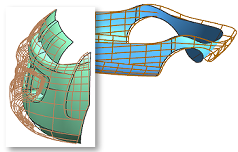

Global Shaping enhancements
Global Shaping enhancements
What is it?
-
Global Shaping by Function is now named Global Shaping, and has two new Types: By Surface and By Curve.
-
All the old Global Shaping—By Function and Global Shaping—By Surface functions are presented as types in one dialog box.
-
All three Global Shaping by Surface types are replaced by the new Global Shaping→By Surface.

-
The new By Curve type allows application of a twist angle at various points along the control curve.

-
For By Surface (Stretch), you can now specify the deformation direction to be Normal to Control.
-
The By Surface and By Curve types present the full Shape dialog box group for moving control surface poles.
Where do I find it?
|
Application |
Modeling and Shape Studio |
|
Toolbar |
Edit Surface |
|
Menu |
Edit→Surface→Global Shaping |